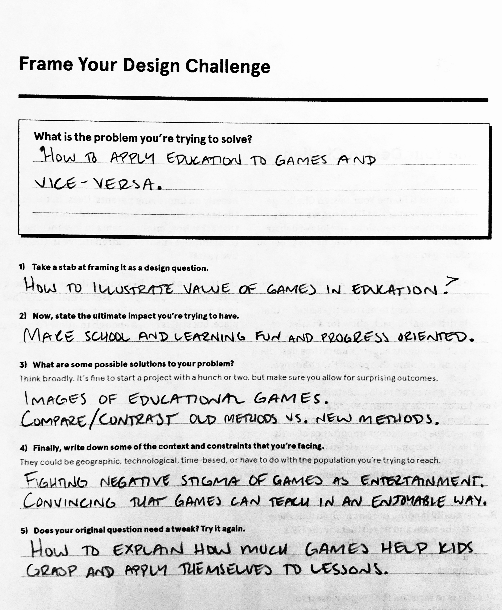

Design Challenge
Now that you've gathered a good bit of primary client research, you should be able to tackle framing the design challenge (or the design problem that needs to be solved).
1) Design Question?
How to illustrate value of games in education.
2) Ultimate Impact?
Make school and learning enjoyable and progress oriented. Create a learning environment where kids want to go to school and progress in their education.
3) Possible Solutions?
- Examples of educational games.
- Compare and contrast old educational methods and new exciting form of game oriemted education.
- Explain how new generations of kids require new methods of teaching that does not bore them and
allows them to digest and recall the information.
4) Constraints Faced:
- Fighting negative stigma of games as waste of time.
- Convincing that games can teach new generation in a way that matches their way of thinking.
5) Tweaked Question:
How to explain how much games can help kids grasp and apply themselves to lessons.
